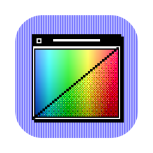
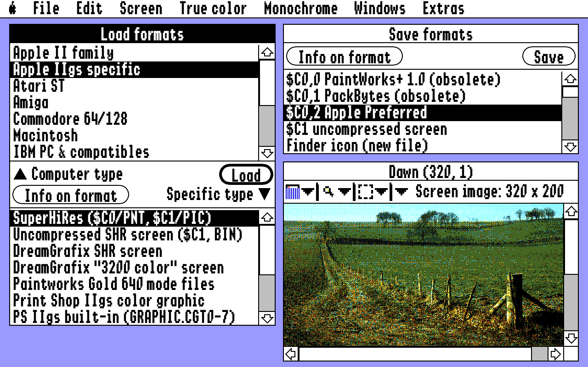
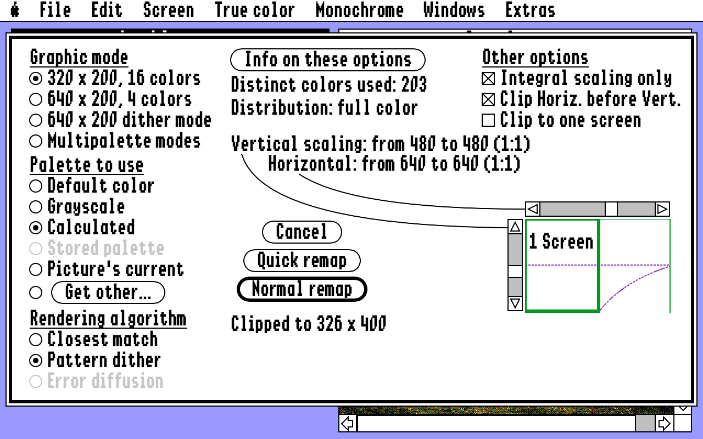
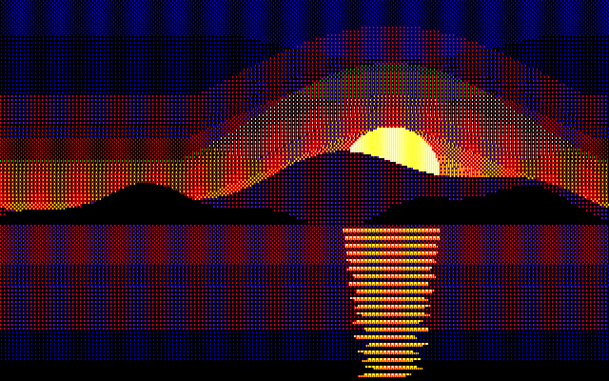
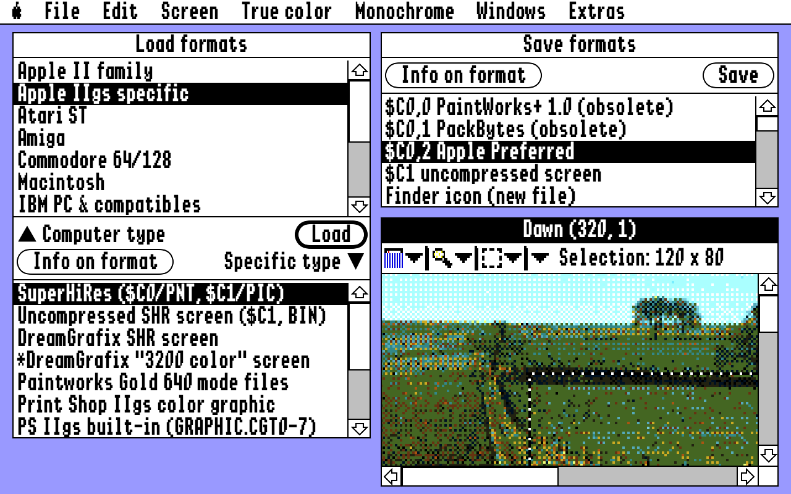
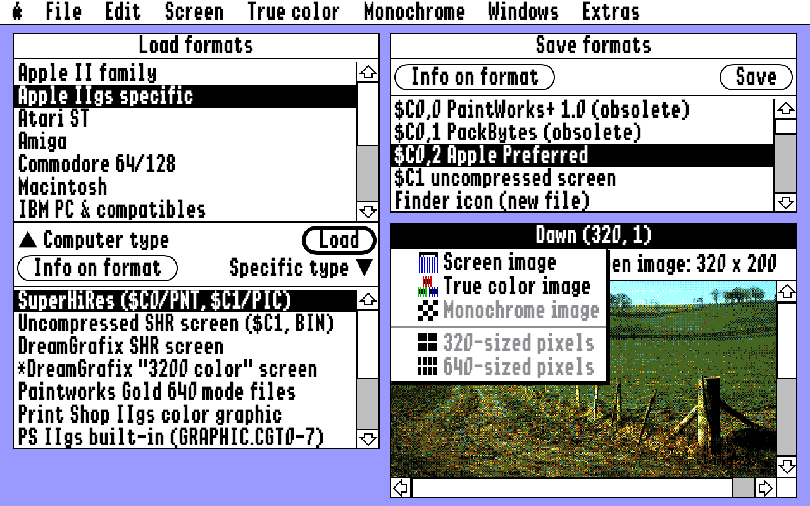
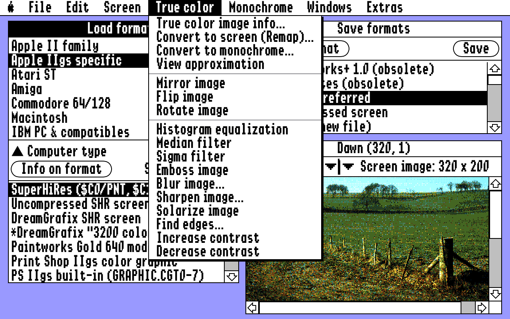
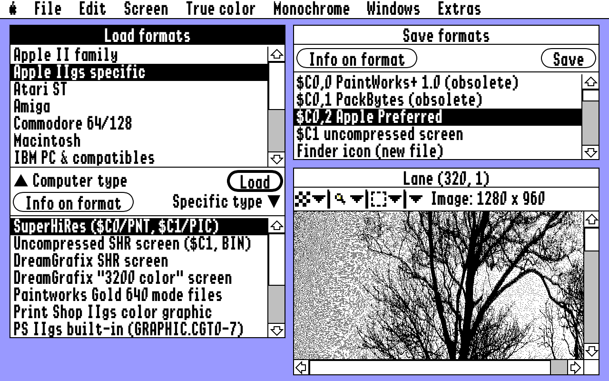
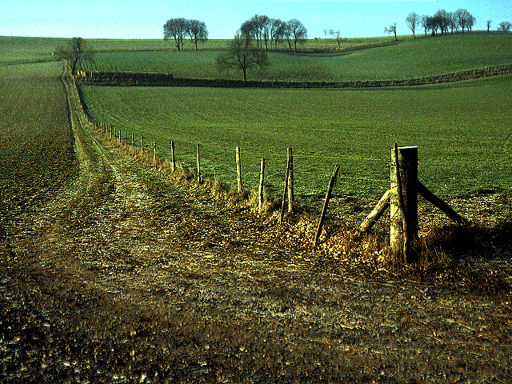

GS Remap

GS Remap
An Apple IIgs picture converter for the Mac.
Load a picture from almost any computer of the 1980s, or a photo from today, and turn it into Apple IIgs Super Hi-Res. It works the way a IIgs program does, and it looks like one too.
Desktop

Pick a computer and a format on the left, press Load, and the picture appears in the Image window. Pick a format on the right and press Save.
What it does
- Loads 70 picture formats from 14 kinds of computer
- Remaps to 320 mode, 640 mode, 640 dither mode or multipalette
- Calculates the best palette for each picture
- Pattern dither and error diffusion
- Ten true color filters
- Black & white images with halftone
- Saves files a real IIgs can open
- Saves Apple II HiRes, Double HiRes and LoRes screens
Remap

Choose the graphic mode, the palette and the rendering. The diagram shows how large the result is against a grid of screens.
640 dither mode

A landscape in 640 x 200 dither mode with the standard palette: eight colors, used the way IIgs desktop programs use them.
Image window

Drag a selection; it snaps to whole bytes or pixels and shows its size. Zoom from 1/8 to 8X, peek at pixel values, or crop to the selection.
Pop-up menus

The info bar's pop-ups choose the kind of image shown, its pixel size, the zoom, the tool and the actions.
Filters

Equalize, median, emboss, blur, sharpen, solarize, find edges and contrast, plus mirror, flip and rotate.
Monochrome

One bit per pixel, with error diffusion, pattern dither, halftone or a plain threshold.
Load formats
- Apple II family
- Apple IIgs specific
- Atari ST
- Amiga
- Commodore 64/128
- Macintosh
- IBM PC & compatibles
- Unix machines
- Amstrad CPC
- Atari 8-bit
- MSX
- ZX Spectrum
- Computer-independent
▲ Computer type
Specific type ▼
Example

An Apple Preferred picture with 3200 colors, as it came from an Apple IIgs.
Save formats
- $C0,0 PaintWorks+ 1.0 (obsolete)
- $C0,1 PackBytes (obsolete)
- $C0,2 Apple Preferred
- $C1 uncompressed screen
- Finder icon (new file)
- Finder icon (add to file)
- Icon resource (new resource file)
- Icon resource (add to resource file)
- Hex data (for programmers only)
- GIF (Graphics Interchange Format)
- PNG (Portable Network Graphics)
- TIFF (Tagged Image File Format)
- BMP (Windows bitmap)
- Apple II HiRes color
- Apple II HiRes black & white
- Apple II Double HiRes color
- Apple II Double HiRes b & w
- Apple II LoRes
- Apple II Double LoRes
- Apple II HiRes color, packed
- Apple II HiRes b & w, packed
- Apple II Double HiRes color, packed
- Apple II Double HiRes b & w, packed
Apple IIgs and Apple II files are saved with a suffix such as #C00002, so CiderPress and cadius give them the right ProDOS file type when you copy them to a disk image. The Apple II screens are dithered in the Apple II colors (error diffusion, a pattern or none), plain or packed, filling the screen or keeping the picture's proportions.
Download
Version 1.1 for macOS 13 or later, Apple Silicon and Intel. Free and open source under the MIT license.
The download is not notarized. The first time, macOS will not open it with a double-click: try once, then go to System Settings, Privacy & Security, and click Open Anyway.
A Mac App Store version is planned.